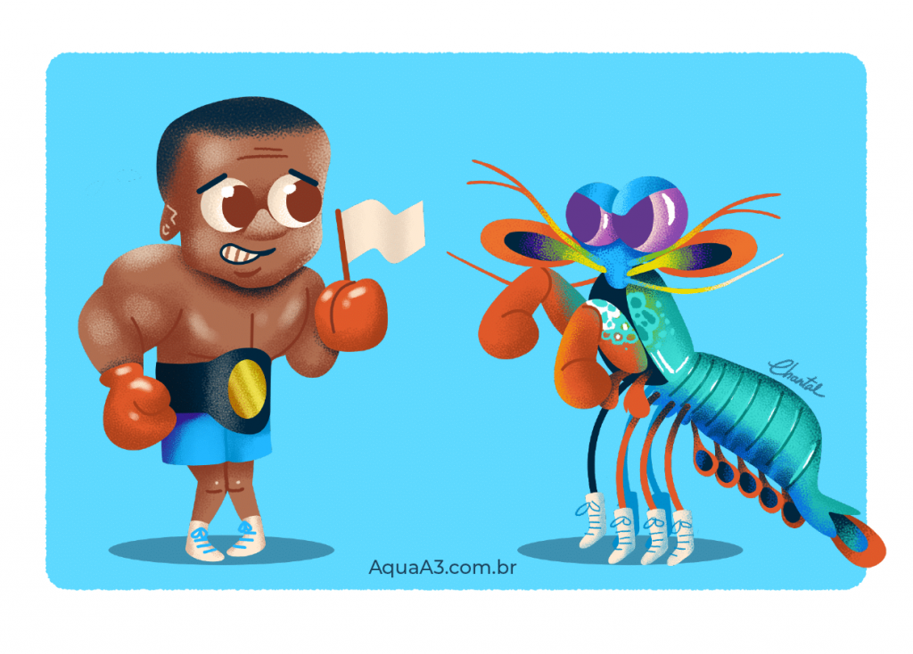
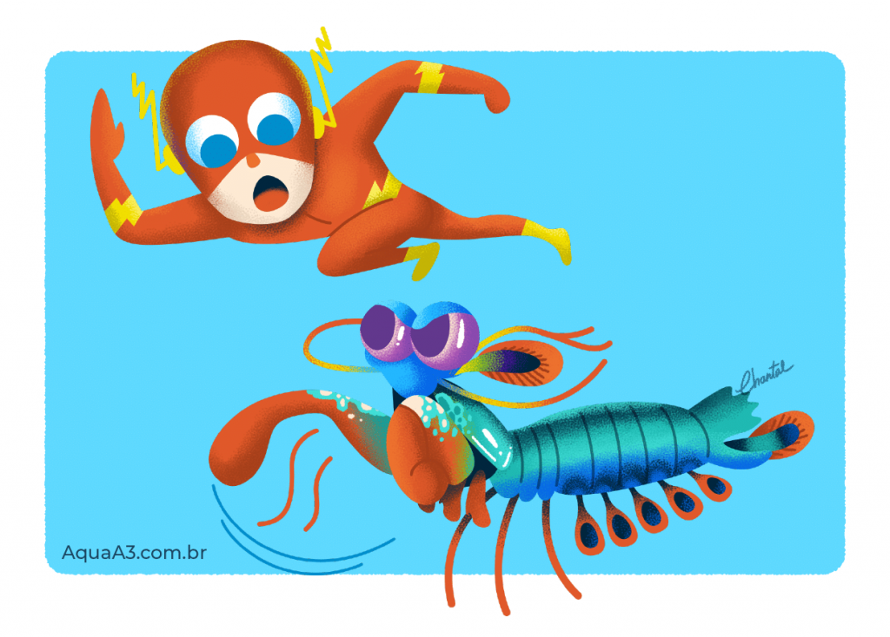
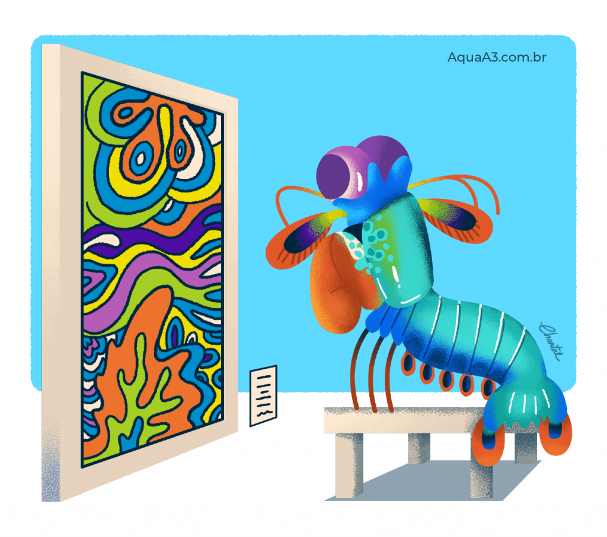

Fatos Sobre o Stomatopoda
Informações gerais
O Stomatopoda ou Camarão Mantis ou Lagosta Boxeadora(È Sério!!) é uma ordem de crustáceos marinhos, do reino animalia, do filo arthropoda, do
subfilo crustacea e da subclasse Hoplocarida, que agrupa cerca de 400 espécies, seu nome científico é Odontodactylus scyllarus,esse pequeno animal tem
algumas características bem peculiares, como as seguintes:
O Animal mais forte do mundo!!

O Camarão Mantis esmagador possui dois apêndices bem desenvolvidos semelhantes a um martelo), chamados de Porretes de Dáctilo.
Com essas “super patas” o animal espanca e esmaga suas presas em uma intensidade de aproximadamente 60 kg/cm²(daí o motivo de um
de seus nomes ser lagosta-boxeadora).
O animal rápido no gatilho!!

Além da enorme potência de seu soco, esse animal consegue movimentar seus apêndices tal qual um tiro de arma de fogo: seu golpe pode chegar
a uma velocidade 720 km/h. Curiosamente, tanto a força quanto rapidez do ataque, não danificam sua estrutura corporal.
Ele possui uma super Visão!!

Muito além de suas peculiaridades motoras, o Camarão Mantis apresenta uma extensa gama de características únicas. A mais emblemática delas, é o fato de
que possui o mais complexo sistema de visão de cores do mundo animal, conseguindo processar 16 cores ao todo. Enquanto nós humanos conseguimos processar
somente três tipos de cores primárias (vermelho, verde e azul), esse distinto animal é capaz de enxergar 12 cores primárias porque possui 12 cones de percepção
de cor. Os quatro cones restantes, lhe permite enxergar imagens multiespectrais, como a luz ultravioleta.